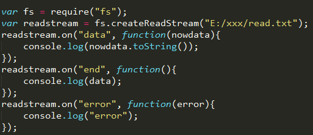
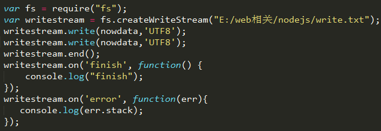
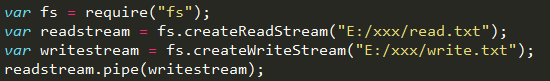
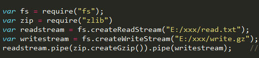
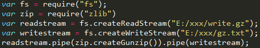
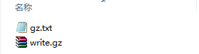

This blog will record some skills of file stream in "node.js".
1. Read stream
First, we should create a file named "read.txt", because the default path of node.js is desktop. So we should write the absolute path.

The read stream has three events: "data", "end" and "error". Event "data" means being processed, and we can use "nowdata" parameter to get the data. Actually, this parameter contains all data of file.
2. Write stream
The write file stream has two events: "finish" and "error". But we can use "end" to mark the finish event as follows.

In this example, I write two "write" function in order to remind you the difference. When you write one "write" function, the data will overwrite the file. But if you write more than twice, the data will be appended into the file, it means the second "write" function will not overwrite the file. You can copy the codes and test it.
3. Read stream unions write stream
Actually, we can union read stream and write stream which can reduce some workloads. In order to achieve this function, we will use "pipe" method of read stream.

In most cases, when we want to read and write big files, we can use "pipe" method to help us.
4. Compress and decompress file
Add "zlib" package into our code so that we can use "createGzip" and "createGunzip" methods to help us compress and decompress files.

And the decompress function:

Ok, let's see the effect:

(That's all)